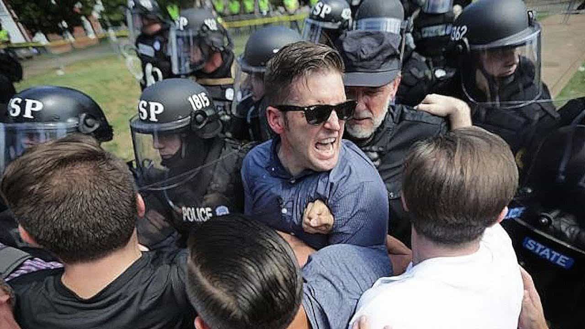
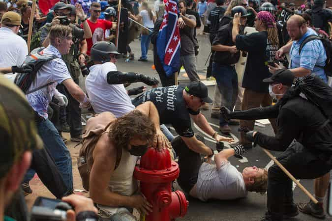

Daryush "Roosh" Valizadeh created ROK in October 2012. You can visit his blog at RooshV.com or follow him on Twitter and Facebook.


I carefully followed the events from Charlottesville this past weekend that culminated with a declaration of emergency for the state of Virginia and the death of a liberal protester who was ran over by an alleged Nazi sympathizer. Regardless of the peaceful intent of the alt right protest, I believe this was a catastrophe that has given the establishment key momentum to marginalize and harm dissidents whose ideology is not based solely on white nationalism.
Charlottesville saw the exact same story we’ve seen during my Canadian lectures in 2015, university events by Milo Yiannopoulos, and spring time protests in Berkeley of coordination between the state authorities and far-left groups like antifa or Black Lives Matter. In the case of Charlottesville, city government and Virginia state police shut down the alt right event before it started through a state of emergency that made any assembly “unlawful,” even though a Federal Judge sanctioned the legality of the event a day before.
Police proceeded to eject alt right protesters from a park into the waiting arms of rabid antifags, who proceeded to attack by launching pepper spray and other objects. One alt right personality, Baked Alaska, is looking at permanent eye damage from what may be a diluted acid attack. Many others on his side sustained serious injuries.
The police determined that any assembly was unlawful for the right, but not for antifa and Black Lives Matter, who gathered bats and other weapons to protest on the streets, completely unmolested. That is when an alt right protester plowed into a crowded intersection with his car, causing the death of a 32-year-old leftist and injuring over a dozen others.
It turns out that the driver was a fan of Hitler and Nazi imagery (other protesters showed up with a Nazi flag). With the narrative now sealed, the media has the death they need to link the alt right to Nazism and domestic terrorism, providing a perfect rallying cry for leftists around the world to dox, harass, impoverish, and threaten dozens of men associated with the protest. I have no doubt that ROK and myself will be put back on the chopping block once the alt right is weakened from this massive assault.
Many dissident commentators are speaking out on how the police were unfair. The left was given a pass, they say, to run wild and attack with impunity, but that doesn’t really matter. This is the game as it is, not as you want it to be, so if you expect fair treatment while the rule of law applies to you but not your enemy, you will lose. If you’re counting on the police to protect you, you will lose. Might makes right, and right now big chunks of the dissident movement is flailing their arms crying about how the enemy is not playing by the rules while they get their clock cleaned. This is not a tactic that will lead to victory.
The reaction of the biggest alt right leader, Richard Spencer, tells me that he was neither prepared not qualified to deal with the events in Charlottesville. His post-mortem podcast was painful to listen to—he joked around and complained endlessly about it being a “set-up.” If I didn’t study properly for an exam, I’d think the teacher set me up, too, upon realizing I don’t have any of the answers.

Would you show up to a rally next month if led by a man who is jovial a day after one of his associates was blinded by a chemical? His actions after the Charlottesville debacle make me question his leadership, and while he may be sincere and gutsy, that’s not enough to prevent injuries and deaths getting racked up on your scorecard. To his credit, he did tighten up in his press conference, but he needs to do some serious soul-searching on whether he’s the man who can continue as a leader for his followers.
There are two psy-op triggers that are buried deep in the American mind: rape and Nazism. When I triggered the world with my How To Stop Rape article, I took the loss and stopped talking about rape. When the alt right triggered the world with their “Hail Victory” Nazi salute, which I defended on free speech grounds, they doubled down until someone who legitimately believed he was a Nazi killed someone.
It’s clear that the Nazi trolling, encouraged by the likes of The Daily Stormer and The Right Stuff, will get you meme-making internet fans and at least one real-life idiot who ends up killing others, whether accidentally or not. The Charlottesville death vindicates prior denouncements by the likes of Gavin McInnes, Paul Ramsey (Ramzpaul), and Mike Cernovich, who seemed to know what an appeal to Nazism would lead to.
If Donald Trump doesn’t need to meme about Hilter to win an election, you don’t either, unless you want your movement to die or be seen as controlled opposition. It’s no surprise that Trump came out to speak against “racism” and “hate,” throwing the alt right under the bus. Their stench is just too great, which is why I will continue to moderate pro-Nazi imagery and users from all sites I operate.
There is a personality called Millennial Matt. Watch this clip of him giving a hospital update of his friend Baked Alaska:
I know that look on his face, because I had the same back in February 2016 during the meetup outrage. It’s when a man is pushed to his limit, when he feels the walls closing in around him, and when he’s hoping that things will just blow over, but sometimes the momentum is too large and things don’t blow over—it continues for weeks. I expect civil lawsuits by those injured in the car accident in the near future.
This isn’t a game, this is war. You may scoff at that comment, but if you’re going to a rally without the expectation that someone there will try to maim or kill you, you run a high risk of being maimed or killed. We have broken the seal of death, and people will start dying at increasing rates. Antifa will want payback for the death of one of their communist allies, so you should not attend any rally unless you’re able to defend your life. Big boobed e-thots should stay home. I repeat, this is not a game, and there is zero excuse for you to be blindsided from this point on.

An important question is what to do next. Rallies and other public events should be crossed off the list unless you’re prepared to run them like a counter-terrorist operation, which is how I was able to pull off my Canadian lectures. It makes absolutely no sense to announce the time and place of your meeting for the main benefit of appearing in fake news, all to be ambushed by antifa who have nothing to lose through their felonious violence.
Unless you’re an e-celeb with a huge ego, you don’t need public events, you don’t need to make the news, and you don’t need to gather massive groups of men you don’t know. Build your movement slow and steady instead of attracting whack jobs who praise Hitler and run people over with cars. Create flash events where leftist foot soldiers don’t receive advance notice on their iPhones of your whereabouts, and focus on winning hearts and minds with poignant, effective, or humorous engagements that are publicized through images or video and allow you to grow slowly as you gain needed experience.
If you insist on facing off with antifa, it’s going to be a fight that will likely lead to injury or imprisonment for you, but not imprisonment for them, and with the My Paycheck Matters police on the side of the state, it’s a hill you don’t want to die on until we enter a hot Civil War scenario. If you can’t become as competent on the field as a genuine Army Major, do not lead people into what will be sure ruin.
It should be clear that we have no allies in existing state and cultural institutions. They hate you and wish you would disappear, because you’re the one remaining obstacle to allowing them to permanently rule and usher in their “end of history.” They’re currently treating you with kid gloves, but we’re fast approaching the point where it will just be easier to outright kill you through their antifa or BLM zombies.
Before you associate with any dissident leader, ask yourself if he will get you maimed or impoverished through his incompetence, unpreparedness, or stupidity. Are you following a leader with an ego or an ego who doesn’t know how to lead? Since we’re still about 2-4 years away from violence that will make Charlottesville look like nothing, you still have time to decide the best way to proceed for you and your country.